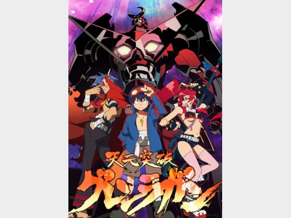
Аниме
Гуррен-Лаганн
История о выходе за пределы привычного мира, огромных роботах и движении вперёд.
Почему рекомендую
За энергию, масштаб и идею не сдаваться перед невозможным.
Моя подборка / 14 историй
На экране и на книжной полке. Подборка аниме, фильмов, сериалов и книг, которые я рекомендую.
На экране / 01
Аниме, анимация и кино. От космических приключений до вопросов о том, что делает человека человеком.

Аниме
История о выходе за пределы привычного мира, огромных роботах и движении вперёд.
Почему рекомендую
За энергию, масштаб и идею не сдаваться перед невозможным.
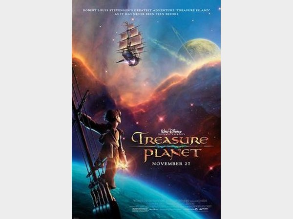
Анимационный фильм
Приключение Джима Хокинса на космическом корабле, вдохновлённое «Островом сокровищ».
Почему рекомендую
За сочетание морской романтики, космоса и истории взросления.
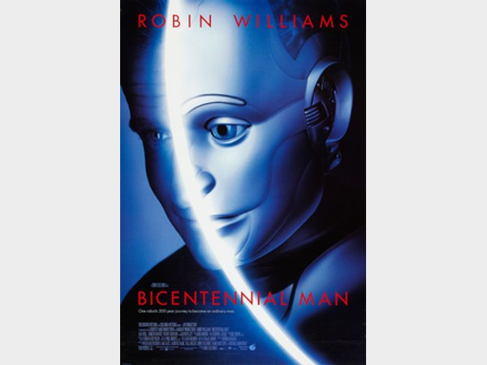
Фильм
История робота Эндрю, который постепенно приближается к пониманию человеческой жизни.
Почему рекомендую
За вопросы о личности, чувствах и праве быть человеком.
Сериал
Киберпанк о мире, где сознание можно переносить между телами.
Почему рекомендую
За детективную интригу и вопросы о цене бессмертия.
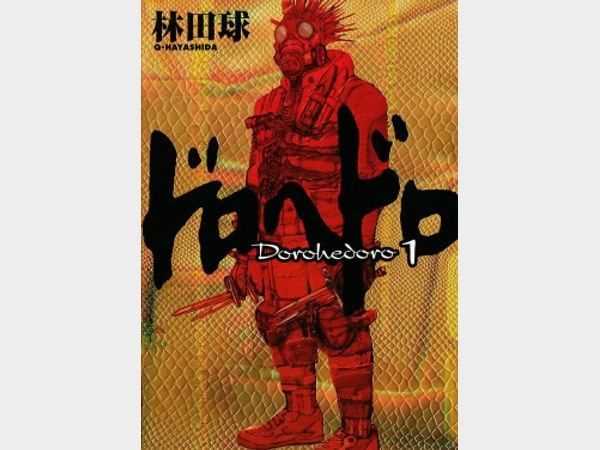
Аниме
Необычный мрачный мир, магия и герой, который пытается разобраться со своим прошлым.
Почему рекомендую
За самобытную атмосферу, странный юмор и запоминающийся мир.
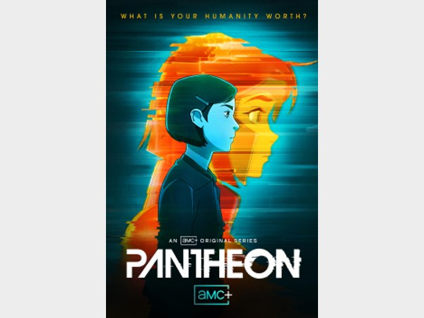
Анимационный сериал
Фантастическая история о цифровом сознании и последствиях переноса разума в сеть.
Почему рекомендую
За сочетание технологий, человеческих отношений и больших вопросов.
На книжной полке / 02
Фантастика и фэнтези: космос, другие реальности, большие вопросы и герои, за которыми интересно следить.
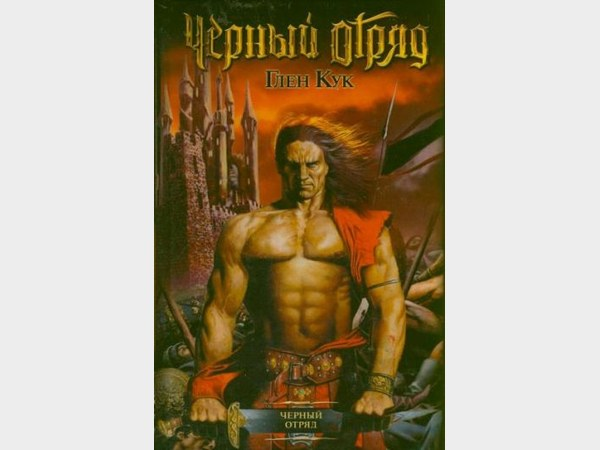
Книга / цикл
Мрачное фэнтези о наёмниках, войне и сложных решениях без простого деления на добро и зло.
Почему рекомендую
За неоднозначных героев и взгляд на большой конфликт изнутри отряда.
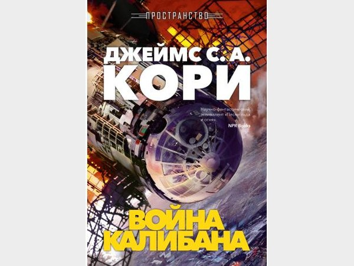
Книга / цикл
Космический цикл о человечестве, освоившем Солнечную систему, и конфликтах за её пределами.
Почему рекомендую
За масштаб, политические интриги и внимание к жизни в космосе.
Книга / цикл
Фэнтези о множестве миров, королевской семье и борьбе за власть.
Почему рекомендую
За идею Теней, интриги и мир, который постоянно расширяется.
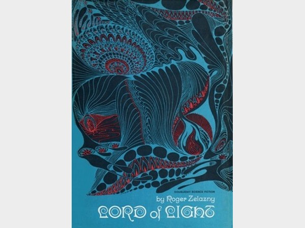
Книга / цикл
Научная фантастика, в которой технологии переплетаются с образами индийской мифологии.
Почему рекомендую
За необычный сплав мифа, философии и фантастической идеи.
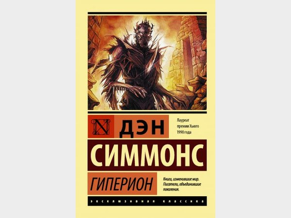
Книга / цикл
Истории паломников, направляющихся к загадочным Гробницам Времени на планете Гиперион.
Почему рекомендую
За многослойность, разные голоса героев и тайны большого мира.
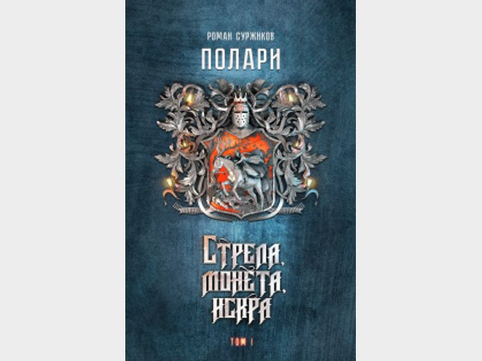
Книга / цикл
Фэнтезийный цикл с политическими интригами, переплетением судеб и сложными решениями.
Почему рекомендую
За продуманный мир и внимание к характерам и мотивам персонажей.
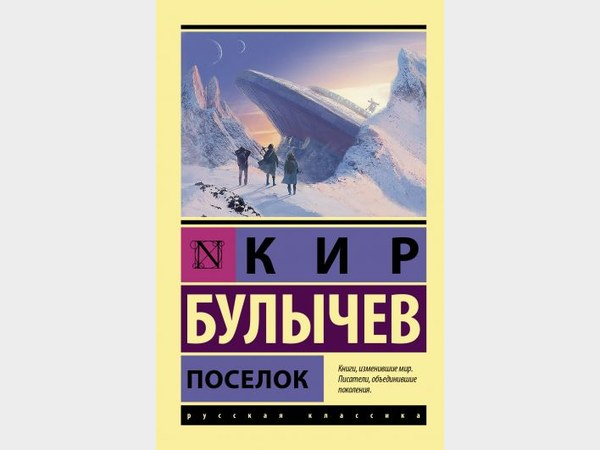
Книга / цикл
Научная фантастика о людях, оказавшихся на чужой планете после крушения космического корабля.
Почему рекомендую
За историю выживания, преемственности и надежды вернуться к звёздам.
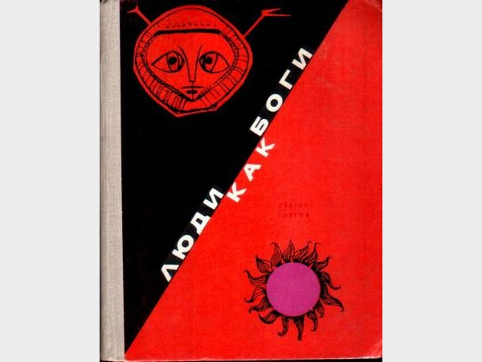
Книга / цикл
Масштабная космическая фантастика о будущем человечества и встречах с иными цивилизациями.
Почему рекомендую
За размах, исследование неизвестного и смелое воображение.
От чужих миров — к моему